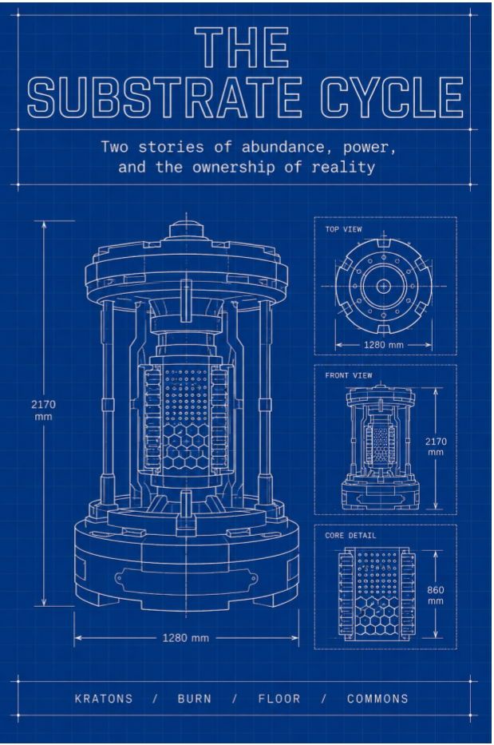

Science Fiction Literature · Axiologic Research Editions
The Substrate Cycle
Two Stories of Abundance, Power, and the Ownership of Reality
When everything is free except consequence, politics moves into the machinery that decides what counts as a contribution to reality.
Two moments in one post-scarcity world
The Substrate Makers and The Substrate Forgers unfold at different moments in a civilisation whose coordination infrastructure has made ordinary scarcity recede without making power disappear. Pando and the later Lattice are federated systems through which communities negotiate a shared reality.
The underlying primitives persist across epochs: an unconditional Floor, non-transferable Kratons, causal attribution, the Burn, local forks and the stubborn scarcity of irreversible choices. Technology changes the object of politics without abolishing politics.
Who owns a shared reality?
What survives abundance? Consequence, attention, legitimacy, bodies and the authority to alter common infrastructure remain scarce.
Can contribution become currency without becoming domination? Kratons record causal participation but create new disputes about measurement and power.
What makes exit real? Forking a system is not freedom if bodies, land and dependency cannot follow the code.
A commons can provide a floor and still grow teeth around the definition of what belongs to everyone.
Blueprint and fracture
The cycle moves from a city deciding whether to surrender itself to the sea toward conflicts over consent, reproduction, dissent and the ownership of the models beneath collective life. Its future is engineered in detail and then tested through the people who must inhabit it.